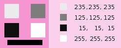

![[Note]](images/note.png)
|
Note |
|---|---|
|
This command does not work on Grayscale images. If the image is Grayscale, the menu entry is disabled. |
- Presets, Blending Options, Preview, Merge filter, Split view
-
Note These options are described in Section 8.1.2, “Colors Common Features”.
- Preserve luminosity
-
The mixing can result in an image where some of the colors are too light. This option lessens the luminosity of the color channels while keeping a good visual ratio between them. So, you can change the relative weight of the colors without changing the overall luminosity.
- Red Channel Multiplier, Green Channel Multiplier, Blue Channel Multiplier
-
Coefficient applied to each channel. Values range from -5.000 to 5.000. As default values are equal in the three channels, image is grayed out.
When this filter is opened, the image preview turns to grayscale, but the image is still a RGB image with three channels, until the OK button is pressed.
Figure 16.171. Red: 100% Green: 50% Blue: 0%. Preserve Luminosity unchecked.

In every square, pixels have been converted into a gray level equal to the value of the Red channel in the original image (The background has been painted with pink afterwards to make all squares visible).
Here is how the Preserve Luminosity works in the monochrome mode: “For example, suppose the sliders were Red:75%, Green:75%, Blue:0%. With Preserve Luminosity disabled, the resulting picture would be at 75%+75%+0% =150%, very bright indeed. A pixel with a value of, say, R,G,B=127,100,80 would map to 127*0.75+100*0.75+80*0=170 for each channel. With Preserve Luminosity enabled, the sliders will be scaled so they always add up to 100%. In this example, that scale value is 1/(75%+75%+0%) or 0.667. So the pixel values would be about 113. The Preserve Luminosity option just assures that the scale values from the sliders always adds up to 100%. Of course, strange things happen when any of the sliders have large negative values.” (from the plug-in author himself).
|
|
Note |
|---|---|
|
Which channel should you modify? This depends on what you want to do. In principle, the Red channel suits contrast modifications well. The Green channel is well adapted to details changes and the Blue channel to noise, grain changes. You can use the Decompose command. |